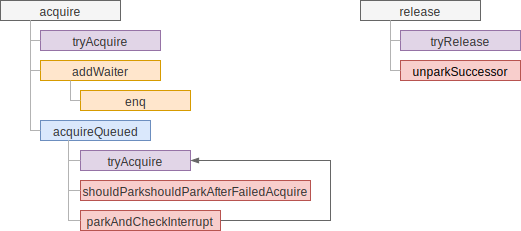
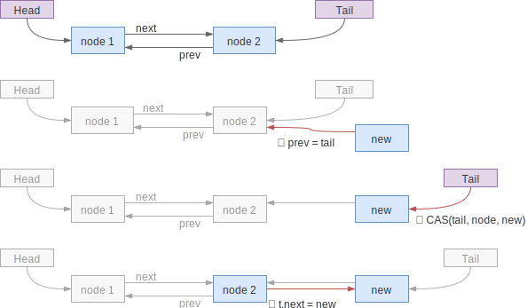
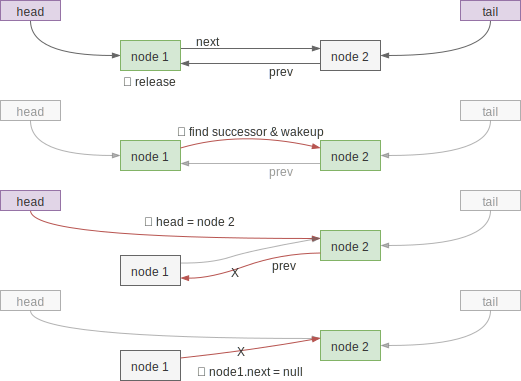

互斥锁
互斥锁（exclusive lock）指的是同一时刻只有一个线程能抢到锁，与之相对的是共享锁，同一时刻有多个线程能抢到锁，如读写锁允许同时有多个读锁。
对于锁的状态，AQS 使用了 volatile int state; 这样的定义，对于互斥锁来说，其实 boolean 类型就足够了，int 型能应对多数的共享锁。
对锁状态的控制，AQS抽象成了两个方法，由实现方自由实现：分别是 tryAcquire 和
tryRelease 方法，代表了尝试获取锁和尝试释放锁。尝试获取失败时 AQS 就要考虑如何将线程加入到队列中了。
AQS 的队列用双向链表实现，抛开花里胡哨的状态管理，最原始的结构如下：
static final class Node {
volatile Node prev;
volatile Node next;
volatile Thread thread;
//...
}
在 AQS 中保留了链表的头和尾：
private transient volatile Node head;
private transient volatile Node tail;
AQS 使用的是 FIFO 队列，从 tail 入队，从 head 出队。约定上，head 节点的后继节点在锁释放时需要被唤醒，唤醒后对应的线程会尝试抢锁，但不一定能成功，在不公平的抢占下，可能有插队（刚到的还没入队）的线程抢到了锁。
调用关系
粗粒度的调用关系如下：

入队（enque）
入队的代码如下所示：
private Node enq(final Node node) {
for (;;) {
Node t = tail;
if (t == null) { // ①
if (compareAndSetHead(new Node()))
tail = head;
} else {
node.prev = t;
if (compareAndSetTail(t, node)) { // ②
t.next = node;
return t;
}
}
}
}
代码中 ① 处是为了实现性能优化，如果从始至终都没有竞争，就不需要使用到队列，所以延迟初始化链表节点节约内存。② 处尝试将新节点加入到队尾，步骤如下图所示：

注意到如果步骤 ③ 完成之前有节点访问了 node2.next，会得到 null，对于双向链表来说是有问题的，但是 AQS 对 next 指针要求可有可无，因为它的作用只是为当前节点查找后继，如是 next == null，则会从 tail 反向查找到 node2 的后继，这在 unparkSuccessor 方法中体现：
Node s = node.next;
if (s == null || s.waitStatus > 0) {
s = null;
// 反向查找 node 的后继
for (Node t = tail; t != null && t != node; t = t.prev)
if (t.waitStatus <= 0)
s = t;
}
AQS 中一般不会直接调用 enq 方法，而是调用包装方法 addWaiter：
private Node addWaiter(Node mode) {
Node node = new Node(Thread.currentThread(), mode);
// 先快速尝试入队，失败时调用 enq，入队逻辑与 enq 中几乎一样
Node pred = tail;
if (pred != null) {
node.prev = pred;
if (compareAndSetTail(pred, node)) {
pred.next = node;
return node;
}
}
enq(node);
return node;
}
出队
FIFO 队列，顾名思义是队首的元素先退出。与传统的双向链表操作不同，AQS 节点出队时并不会释放节点，而是唤醒下一个等待的节点，由被唤醒的线程来释放队首的节点。如下图：

首先需要在释放锁的时候唤醒 head 对应节点的后继节点，即上图中的 node2，代码入口在 release，其中 arg 参数透传给具体的 tryRelease 实现，AQS 不关心。
public final boolean release(int arg) {
if (tryRelease(arg)) {
Node h = head;
if (h != null && h.waitStatus != 0)
unparkSuccessor(h);
return true;
}
return false;
}
其中 unparkSuccessor 的实现如下，查到后继节点并唤醒对应线程：
private void unparkSuccessor(Node node) {
// waitStatus 处理，现在先忽略
int ws = node.waitStatus;
if (ws < 0)
compareAndSetWaitStatus(node, ws, 0);
// 通过 next 找到后继节点，如果为 null 则由 tail 反向查找
Node s = node.next;
if (s == null || s.waitStatus > 0) {
s = null;
for (Node t = tail; t != null && t != node; t = t.prev)
if (t.waitStatus <= 0)
s = t;
}
if (s != null)
LockSupport.unpark(s.thread); // 唤醒后继节点的线程
}
上面代码只是唤醒下一个等待节点，被唤醒线程尝试抢锁并释放 head 节点的逻辑，在抢锁的方法里。
抢锁（acquireQueued）
抢锁的代码入口是 acquire，调用 tryAcquire 尝试抢锁失败后调用 addWaiter
将节点入队，再调用 acquireQueued 处理状态的变化：
public final void acquire(int arg) {
if (!tryAcquire(arg) &&
acquireQueued(addWaiter(Node.EXCLUSIVE), arg))
selfInterrupt();
}
acquireQueued 的实现如下，死循环尝试抢锁直到失败或被中断。成为 head 节点的后继时会尝试抢锁，成功则成为 head 节点并释放之前的 head 节点，失败则看情况进入休眠：
final boolean acquireQueued(final Node node, int arg) {
boolean failed = true;
try {
boolean interrupted = false;
for (;;) { // 重试直到获取锁或被中断
final Node p = node.predecessor();
if (p == head && tryAcquire(arg)) { // 当前节点为 head 后继时才尝试获取锁
// 如上节出队中所说，获得锁后需要释放当前的 head 节点
setHead(node);
p.next = null; // help GC
failed = false;
return interrupted;
}
// 看情况休眠，可能会在锁释放或接收到中断时被唤醒
if (shouldParkAfterFailedAcquire(p, node) &&
parkAndCheckInterrupt())
interrupted = true;
}
} finally {
if (failed)
cancelAcquire(node); // 失败时需要取消操作，此处先省略
}
}
休眠
在 acquireQueued 中休眠涉及两个方法：shouldParkAfterFailedAcquire 用于检测当尝试抢锁失败后是否应该休眠，只有当前驱节点的 waitStatus 变成了 SIGNAL 后，代表前驱节点释放后会唤醒我们，这才可以安心休眠；另一个方法
parkAndCheckInterrupt 是真正执行休眠，被唤醒后检测中断的状态。
shouldParkAfterFailedAcquire 的源码如下，其中很多状态管理在共享锁中使用
private static boolean shouldParkAfterFailedAcquire(Node pred, Node node) {
int ws = pred.waitStatus;
if (ws == Node.SIGNAL)
// pred 节点状态正确，锁释放时会唤醒 node，因此可以放心休眠
return true;
if (ws > 0) {
// pred 节点取消了，跳过它找到更前面的节点
do {
node.prev = pred = pred.prev;
} while (pred.waitStatus > 0);
pred.next = node;
} else {
// 在 waitStatus == 0 或 PROPAGATE 的情况下需要将 pred 的状态设置成
// SIGNAL，保证 pred 释放锁时能唤醒 node 状态改完后 node 需要再次尝试抢锁
// ，防止 pred 节点还没看到更新后的状态就被释放了
compareAndSetWaitStatus(pred, ws, Node.SIGNAL);
}
return false;
}
方法里包含了很多状态管理，但对于互斥锁来说，主要关心 waitStatus == 0 和
waitStatus == SIGNAL 的情况，其它情况后续介绍的功能中会使用。
parkAndCheckInterrupt 实现比较简单，进入休眠，被唤醒时调用
Thread.interrupted 检查中断状态。代码如下：
private final boolean parkAndCheckInterrupt() {
LockSupport.park(this);
return Thread.interrupted();
}